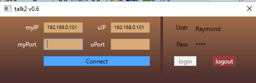

Chat Application using sockets in C#
Introduction
Chat in a work or home environment using duo chat app created entirely in c#
Building the Sample
The program needs to run as admin to save chat log to hard drive if the 'save chat' checkbox is checked
Description
By default you are logged out and need to click the login button to be able to configure the app for connection. You can customize who can use the app while editing the code.
On the program load; it fetches the ipaddress of your computer and populates the 'myIP' textbox which is then used to create a socket connection after clicking the connect button
The program parses the text in the 'myIP' textbox for your ipaddress and the text in 'uIp' for your friends ipaddress

Type a port not currently in use in the 'myPort' field and in the 'uPort' field type a port to use to connect to your friend which has to not be in use on your friends computer
Click the connect button to establish connection through the ipaddress and port provided
Once connection is established the send button becomes enabled
private void btnStart_Click(object sender, RoutedEventArgs e)
{
try
{
if (epLocal == null && epRemote == null)
{
if (txtFriendsPort.Text != "" && txtLocalPort.Text != "")
{
// bind socket
epLocal = new IPEndPoint(IPAddress.Parse(txtLocalIp.Text), Convert.ToInt32(txtLocalPort.Text));
sckCommunication.Bind(epLocal);
// connect to remote ip and port
epRemote = new IPEndPoint(IPAddress.Parse(txtFriendsIp.Text), Convert.ToInt32(txtFriendsPort.Text));
sckCommunication.Connect(epRemote);
// starts to listen to an specific port
buffer = new byte[1464];
sckCommunication.BeginReceiveFrom(buffer, 0, buffer.Length, SocketFlags.None, ref epRemote, new AsyncCallback(OperatorCallBack), buffer);
// release button to send message
btnSend.IsEnabled = true;
status.Text = "Connected";
}
else
{
status.Text = "Port input cannot be Empty";
}
}
else
{
status.Text = "You are already Connected";
btnSend.IsEnabled = true;
}
}
catch (Exception ex)
{
MessageBox.Show(ex.Message);
}
private void btnStart_Click(object sender, RoutedEventArgs e) { try { if (epLocal == null && epRemote == null) { if (txtFriendsPort.Text != "" && txtLocalPort.Text != "") { // bind socket epLocal = new IPEndPoint(IPAddress.Parse(txtLocalIp.Text), Convert.ToInt32(txtLocalPort.Text)); sckCommunication.Bind(epLocal); // connect to remote ip and port epRemote = new IPEndPoint(IPAddress.Parse(txtFriendsIp.Text), Convert.ToInt32(txtFriendsPort.Text)); sckCommunication.Connect(epRemote); // starts to listen to an specific port buffer = new byte[1464]; sckCommunication.BeginReceiveFrom(buffer, 0, buffer.Length, SocketFlags.None, ref epRemote, new AsyncCallback(OperatorCallBack), buffer); // release button to send message btnSend.IsEnabled = true; status.Text = "Connected"; } else { status.Text = "Port input cannot be Empty"; } } else { status.Text = "You are already Connected"; } } catch (Exception ex) { MessageBox.Show(ex.Message); }

More Information
For more information on Talk2, email me at benneogee@yahoo.com,